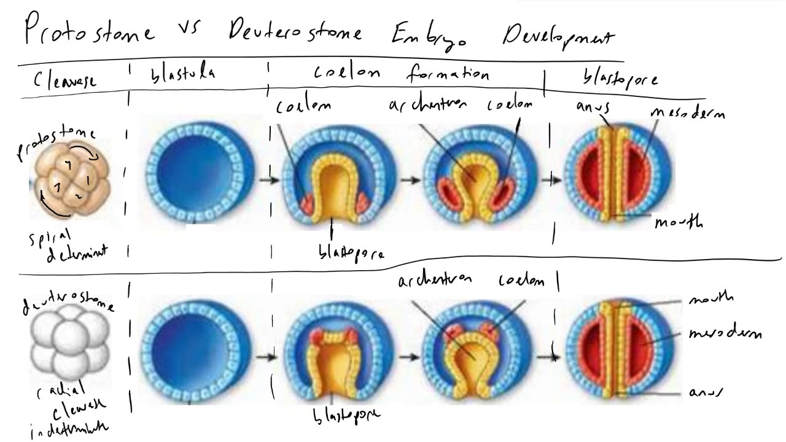

Diversity of Animals
Choanoflagellates
- Sing-celled flagellated protists which are the closest living relatives of animals
- Form colonies, cooperative groups that are considered and eveolutionary stepping stone toward multicelluarity
The Kingon Animalia
- Animals are ingestive heterotrophs:
They obtain energy and carbon by bringing food into the body and digesting and absorbing it internally.
- All animals are consumers, and some are decomposers
- Animals exhibit locomotion (self-directed movement of the whole body) at some stage of the life cycle
The evolutionary origins of animalia
- Spones are the oldest animal lineage, followed by the cnidarians, which include jellyfish and corals
- Protosomes and deuterostomes are two broad groups of animals, distinguished by the way their embryos develop

Characteristics of Animals
- Animal cells lack a cell wall and instead most are attached to an extracellular matrix
- Patches of proteins that make up cell junctions attach animal cells to each other and to
the extracellular matrix
- All except sponges
- Presence of true tissues
- Pattern of gastralation during embryo development
- Body symetry
- Organs and Organ systems
- Body cavities
- Semgentation of the body
Most animals have true tissues
- Cnidarians are one of the firest animal groups to have evolved true tissues
- Specialized tissues facilitate complex animal behaviors
- Cnidarians have a network of interconnected nerve cells and ligh-sensitive regions know as eye spots
- Muscle tissue is found in all animals excpet sponges
Most animals have symmetrical bodies
- Most animals exhibt either radial or bilateral symetry
- Radial symmetry gives sessile animals greater access to their enviornment
- Bilateral symmetry enables rapid and efficient locomotion
- Bilateral symmetry leads to cephalization, (cepha:head, cephalization=formation of head) the concentration of sensory at the anterior end,
which made directional movement more effective
Most animals (Protosomes and Deuterostomes) have organs and organ systems
- An organ has a definite shape, size, and location in the body
- Two or more organs working together form an organ system
- The evolotuion of organ systems has allowed animals to achieve more complex behaviors, including the ability to reflect on the nature of all life
Some animals evolved complex body cavities
- Body cavities allow animals internal organs to grow freely and function indepenedently
- Most body cavities also provide padding, protection, and support for organs
Semgentation enables division of labor among body parts
- Many animals have repeated units called segments
- Appendages are specialized body parts taht arize from body segments and enable divers adaptations to new habitats or new modes of life
The First Invertebrates:
Sponges, Jellyfish, and Relatives
- Animal lineages diverge very early in animal evolution
- Sponges, jellyfish, corals are
PORIFERA- Sponges
- 10,000 species in three main groups
- Exclusively aquatic, mostly marien
- Tiny to huge ( 15ft tall - loggerhead sponges)
- 6 cell types in sponges (humans have >250)
- No true mouth
Sponges are the simplest animals
- Sponges are filter feeders that feed on bacteria, amoebas, and other organisms they acquire from their enviornment
Sponges have specialized cells, but lack true tissues
- A sponge is a loose collectin of cells, witheach cell functioning largely indpenedntly from other cells
- Chonaocytes, or collar cless, line the canals and interior chambers of sponges.
- Spicules are sharp structures that help protect and provide structural support to sponges
Sponge Reproduction
- Sexual and asexual
- Asexual - regeneation through breaking off pieces
- Sexual - some are monecious and some are dioecious
Sponge ecology
- Many are mutualists with fish, mites, snails
- Can grow on other animals
- Can be used as comouflage
- Few predators, including ony fish, turtles, some fly larvae
- Substrate limited competition; coral are competitiors
Human Impacts
- Bath sponges; 5 years to marketables size
- Bioactive compounds - antibiotics, anti-inflammatories
- Materials science - strognest "glass" structure known, silica spicules transmit light better than commerical optic fibers
- Aquarium trade
- Bottom trawling
CNIDARI - Jellyfish and allies
- 9,000 species alive today
- Jellfish, hydras, sea anemones, corals, sea fans, sea whips
- Longest fossil history of any animal
- Simplest animal with true tissues
- All are aquatic, dominantly marine
- Many are colonial
Cnidaria - Body Forms
- Radial Symmetry
- Polymorphic - 2 or more separate body forms with alternation between forms
- Polyp: tubular body, susally sessile, benthic
- Medusa: free floating, pelagic
Cnidaria - Cells and Tissues
- Two true tissue layers - ectoderm and endoderm with mesoglea between
Feeding and Digestion
- All are carnivores
- Most have rings of tentacles surrounding mouth
- Cnidocytes- stinging cells to capture prey; inside each cell is a nematocyst (harpoon) with a tactile trigger
- Discharge as a result of high osmotic pressure
- Each cell operates independently
- Discriminate in firing
- Must grow new nematocyst after firing
Body Systems & Life Spans
- No repiratory or excretory systems
- No head, no cephalization no central nervous system
- Nerve net is simple - coordinating body contraction
- Can be long-lived
- Jellyfish up to 10 years
- Sea anemone = 80 years until tank accidentally drained
Reproduction
- Sexual and asexual
- Asexual via budding
- Sexual - diecious
- Mass spawing
- Embryo = planula
- Some can switch sexes
Major Groups
- Hydrozoa (hydra)
- Scyphonzoa (jellyfish)
- Cubomedusa (box jellyfish)
- Anthozoa (corals, sea anemonmes
Cnidarians & Humans
- Jellyfish are food
- Singing cells can be lethal
- Pharmaeuticals - anti-inflamatries
- Cariac stimulants from sea anemones
- Green fluoresecent protein from jellyfish many research applications